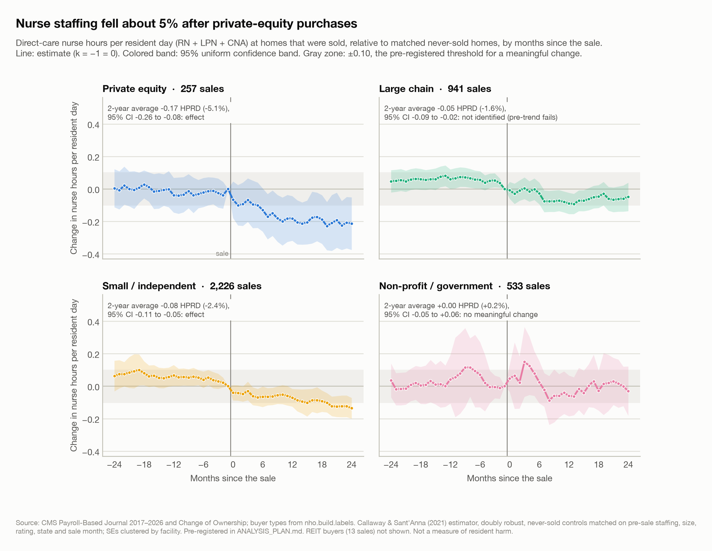
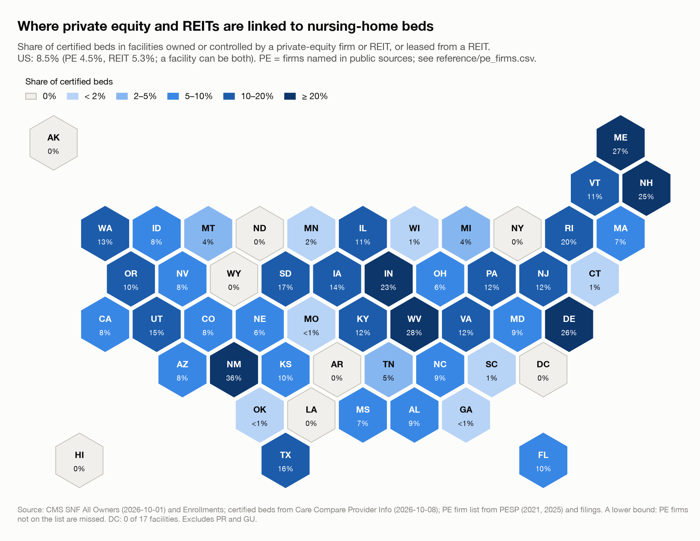
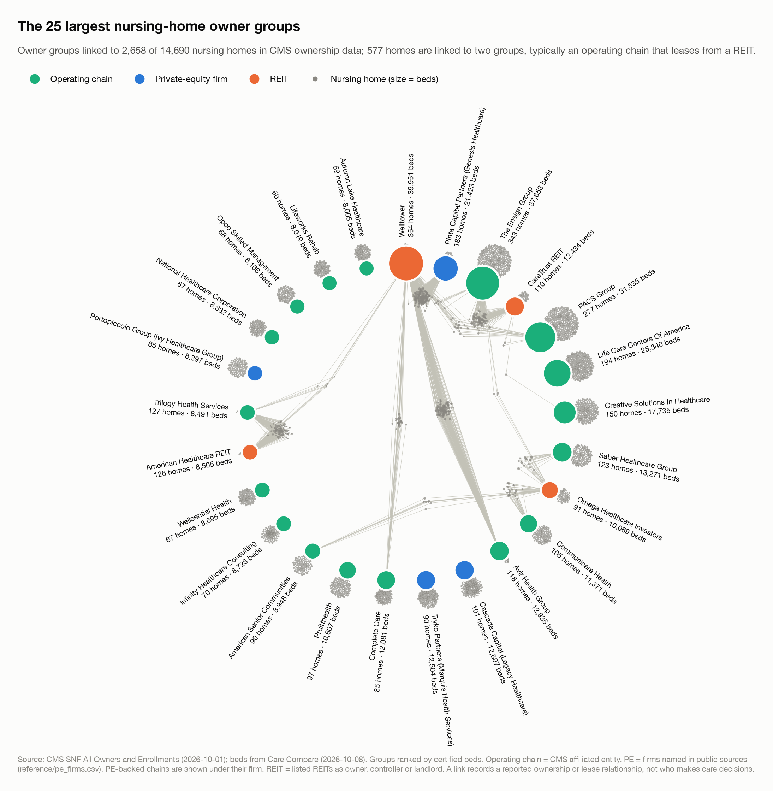
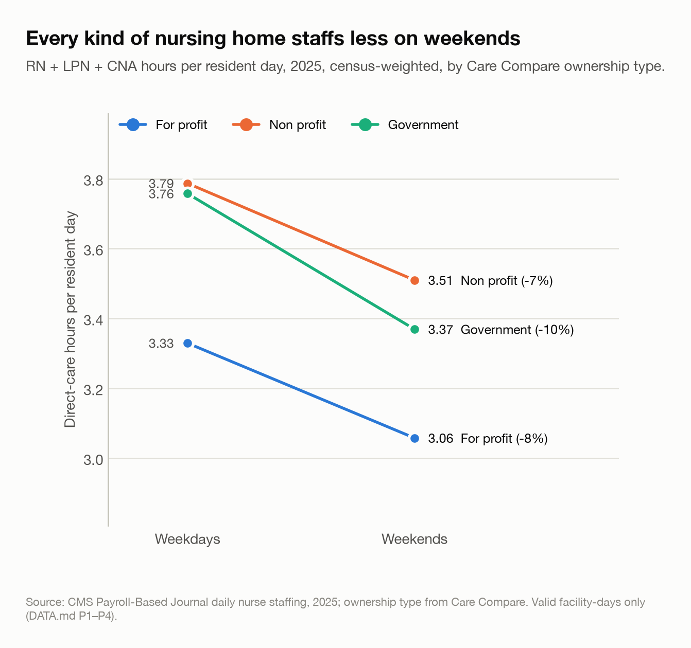
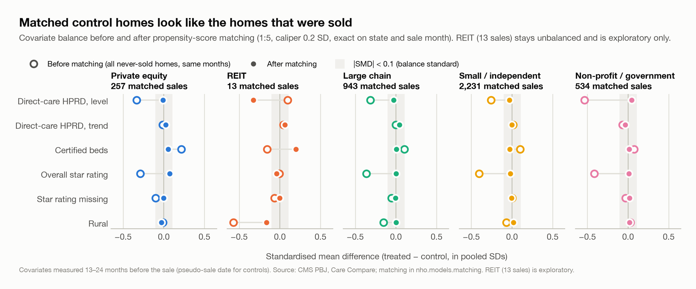
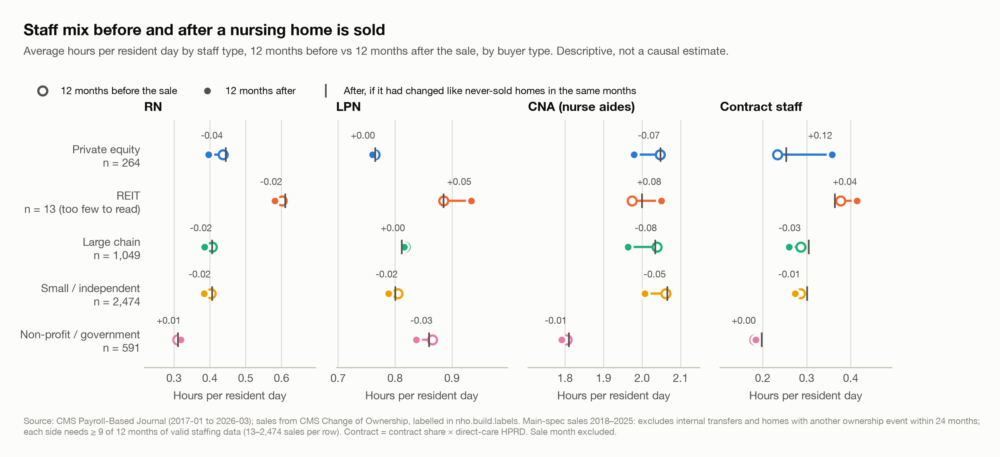
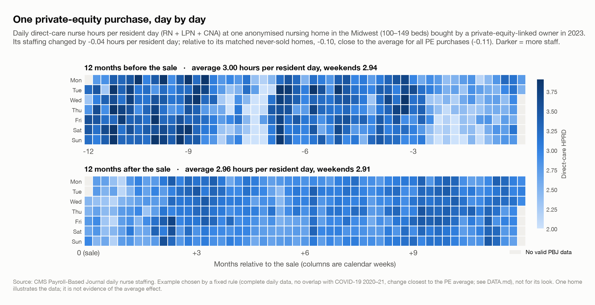
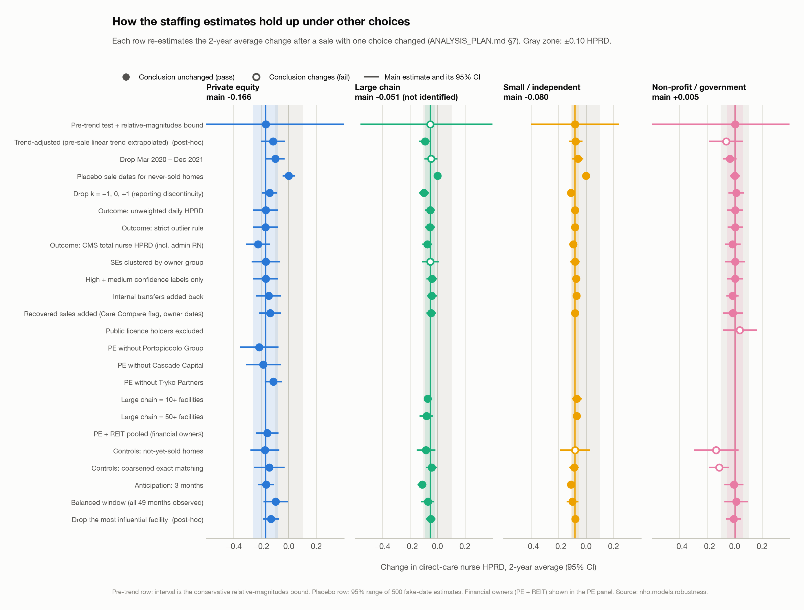
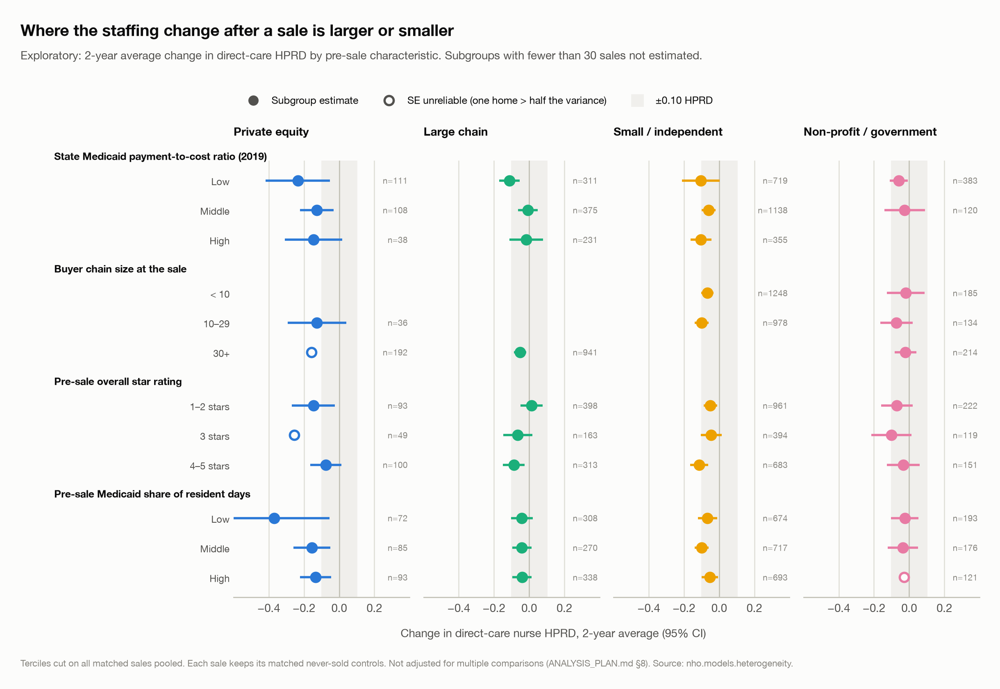
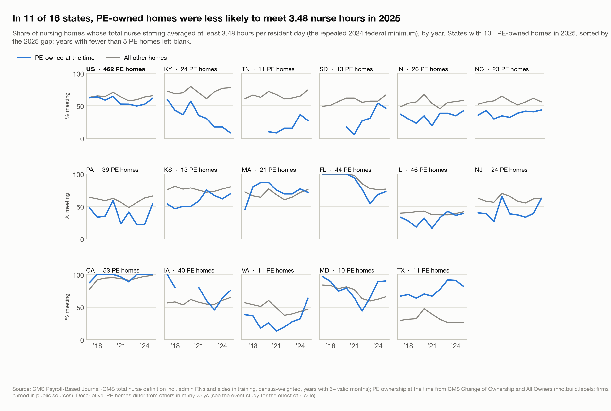

| Buyer | Sales | Change, hours per resident day | 95% CI | Change, % | Pre-sale trends similar? | Reading |
|---|---|---|---|---|---|---|
| Private equity | 257 | −0.166 | −0.26 to −0.08 | −5.1% | Yes | Staffing fell |
| Large chain | 941 | −0.051 | −0.09 to −0.02 | −1.6% | No | Can’t tell (trends differed before the sale) |
| Small / independent | 2,226 | −0.080 | −0.11 to −0.05 | −2.4% | Yes | Staffing fell |
| Non-profit / government | 533 | +0.005 | −0.05 to +0.06 | +0.2% | Yes | No meaningful change |
| REIT (exploratory) | 13 | −0.230 | −0.58 to +0.12 | −6.8% | No | Can’t tell (trends differed before the sale) |
After the Buyout
What happens to nurse staffing in U.S. nursing homes when ownership changes
An event study of 16,000 nursing homes’ daily payroll staffing records, 2017–2026, around changes of ownership, by type of buyer.
NoteThree findings
- After a private-equity firm bought a nursing home, nurse staffing fell by about 5%, compared with similar homes that were not sold. That is about 10 fewer minutes of hands-on nursing care per resident each day, and the gap had not closed two years after the sale.
- The hours lost were mostly nurse aides’ and registered nurses’ hours, and weekend staffing fell too. The rise in agency (contract) staff that the raw data seemed to show is not confirmed: contract use was already rising before these sales.
- Other buyers differ. After sales to small and independent buyers, staffing also fell, but by less than half as much (2.4%). Non-profit and government buyers made no meaningful change. For homes bought by large chains, the data can’t tell, because those homes’ staffing was already moving differently before the sale.

The question
When a nursing home changes hands, does the new owner change how many nurses are on the floor? And does the answer depend on who the buyer is?
This article compares five kinds of buyer: private-equity firms, real-estate investment trusts (REITs), large chains (30 or more homes), small or independent operators, and non-profit or government bodies. For each, it asks how staffing changed after the sale, compared with similar homes that were never sold over the same months.
Staffing is measured in hours per resident day (HPRD): the hours worked by registered nurses (RNs), licensed practical nurses (LPNs) and certified nurse aides (CNAs) on direct care, divided by the number of residents. Homes bought by private equity averaged about 3.25 hours per resident per day before their sale.
Why now
- Ownership is more visible in public data than before. Since 2022, CMS has published detailed ownership files for every Medicare-enrolled nursing home, listing each owner’s role and share and the dates of changes of ownership, and the files now include self-reported private-equity and REIT flags. Linked to daily payroll records, they make it possible to follow ownership and staffing for every home in the country.
- The federal staffing floor is gone. In 2024 CMS set a minimum of 3.48 total nurse hours per resident day. A federal court vacated it in April 2025, Congress barred its enforcement until 2034, and CMS repealed it in an interim final rule effective February 2026 (status checked October 2026). With no federal floor, what owners choose to do with staffing matters more.
- Private equity is a small but concentrated part of the sector. In this study’s data, about 9% of certified beds are in homes linked to a private-equity firm or a listed REIT, and a handful of firms account for most private-equity purchases.
What earlier research found. The best-known study of private-equity nursing-home purchases (Gupta, Howell, Yannelis & Gupta, Review of Financial Studies, 2024) found that nurse staffing declined after private-equity buyouts, using data from before CMS’s daily payroll records existed. This study uses those daily records, covers 2017–2026, and compares private equity with every other kind of buyer.
Data

- Staffing: the CMS Payroll-Based Journal (PBJ), the daily hours every nursing home must submit from its payroll and contractor records. It covers January 2017 to March 2026: about 49 million facility-days at 16,157 homes. Days that fail plausibility checks (no residents, no hours, or fewer than 1 or more than 12 hours per resident) are dropped. Missing months stay missing; they are never counted as zero.
- Sales: the CMS Change of Ownership file, linked to the CMS All Owners and Enrollments files to identify each buyer. A curated, cited list of private-equity firms supplements CMS’s own flags, which many owners fill in inconsistently.
- Home characteristics: monthly Care Compare snapshots (beds, star ratings, turnover), inspection citations, cost reports, and state and county context.

How buyers were labelled. Each sale’s buyer is classed by rules applied in order: private equity (owner or controller on the cited firm list), REIT (a listed REIT that arrived with the sale), large chain, small/independent, or non-profit/government. On a fresh hand-checked sample of 30 sales, the labels were right about 73% of the time (weighted). Chain and independent labels were all correct (12 of 12) and private-equity labels mostly correct (7 of 9); REIT labels were the weakest (1 of 6). A sample this small gives only a rough guide. Transfers between related owners are not counted as sales.
Most staffing differences across homes predate any sale. Weekends are one example: for-profit homes staff 8% fewer hours on weekends than on weekdays (3.06 vs 3.33), and every ownership type shows a similar dip. That is why this study compares each home with itself before and after the sale, and with similar homes over the same months.

Method
The design was registered before any outcome was estimated. The analysis plan (ANALYSIS_PLAN.md) was committed and tagged prereg-v1 before any staffing model was run. It sets the hypotheses, outcomes, comparison groups, tests and the rule for calling a result “no change”. Every later change is logged in the plan with its date and reason; two checks added after seeing results are labelled post-hoc below.
- Which sales. Changes of ownership from January 2018 to March 2025, each home’s first qualifying sale, with no other ownership change within two years either side.
- Comparison homes. Each sold home is matched to up to five homes that were never sold, in the same state and sale month, with similar staffing levels and trends in the second year before the sale (months −24 to −13, before any sale-related changes), similar size, star rating and rural or urban location. After matching, sold and comparison homes are balanced on all of these for the four main buyer types (standardized differences of 0.08 or less).
- Estimator. A staggered difference-in-differences event study (Callaway & Sant’Anna, 2021), which compares each sold home’s staffing in each month from two years before to two years after the sale with its matched homes over the same calendar months. It avoids the known biases of a plain two-way fixed-effects regression when sales happen at different times. A second estimator (Sun & Abraham, 2021) is run as a cross-check. Standard errors are clustered by home.
- The headline number is the average change over the 25 months from the sale month to two years after.
- Reading the results. A buyer type has an effect when the 95% confidence interval excludes zero. It has no meaningful change when the 90% interval lies inside ±0.10 hours per resident day, the threshold set in advance. A result is not identified when sold homes’ staffing was already diverging from their matches before the sale. The four main buyer types are tested together with a Holm correction.

Results
Figure 1, at the top of this article, shows the month-by-month estimates for the four main buyer types.
Private equity. Across 257 private-equity purchases, direct-care staffing fell by 0.17 hours per resident day on average over the two years after the sale (95% CI −0.26 to −0.08; Holm-adjusted p = 0.001). That is 5.1% of the pre-sale level, about 10 minutes of nursing per resident per day. The decline grew over time, reaching −0.21 at two years. Before the sale, these homes tracked their matches closely: no pre-sale month differed by more than 0.04 hours. The cross-check estimator gives −0.16.
Small and independent buyers. Staffing fell by 0.08 hours per resident day (2.4%; 95% CI −0.11 to −0.05) across 2,226 sales. These homes were drifting down slightly before the sale; a check that removes that drift (post-hoc) still gives −0.08.
Non-profit and government buyers. No meaningful change: +0.005 (95% CI −0.05 to +0.06), across 533 sales. This null is the least robust of the results (see Robustness).
Large chains. Staffing fell by 0.05 hours per resident day after 941 sales, but these homes’ staffing was already moving differently from their matches before the sale (pre-trend test p = 0.048). The study therefore cannot attribute the change to the sale.
REITs. Only 13 sales qualify, too few to estimate anything reliably. They are reported for completeness only.
What changed inside the home
The private-equity decline came mainly from nurse aides (−0.108 hours per resident day) and registered nurses (−0.052, about 12% of RN hours). LPN hours showed no clear change. Weekend staffing fell by 0.135 hours per resident day, so the decline was not confined to weekdays.
Before the analysis plan was written, a descriptive chart suggested that private-equity buyers turned to agency staff after a sale; the plan disclosed that. The event study does find contract share rising (+2.8 percentage points), but contract use was already rising before these sales, so the rise cannot be attributed to the buyer.
| Outcome | Private equity | Large chain | Small / independent | Non-profit / government |
|---|---|---|---|---|
| RN hours | −0.052 (−0.077 to −0.027) | −0.025 (−0.036 to −0.013) | −0.015 (−0.024 to −0.007) | +0.052 (−0.004 to +0.107) |
| LPN hours | −0.006 (−0.030 to +0.018) | +0.010 (−0.005 to +0.025) | −0.013 (−0.024 to −0.002) | −0.024 (−0.054 to +0.005) |
| CNA (aide) hours | −0.108 (−0.177 to −0.039) | −0.037 (−0.062 to −0.012) | −0.052 (−0.072 to −0.032) | −0.023 (−0.060 to +0.015) |
| Weekend hours | −0.135 (−0.214 to −0.056) | −0.064 (−0.098 to −0.030) | −0.080 (−0.106 to −0.053) | −0.009 (−0.079 to +0.061) |
| Contract share | +0.028 (+0.011 to +0.044) † | −0.011 (−0.020 to −0.002) † | −0.002 (−0.007 to +0.004) † | −0.005 (−0.016 to +0.006) |
| Nursing staff turnover (%) | −4.1 (−11.4 to +3.1) † | +2.2 (+0.7 to +3.7) | +2.9 (+1.8 to +4.1) † | +0.2 (−2.2 to +2.6) † |

One home, day by day

Daily data are noisy: staffing swings from week to week, and short pale stretches mark weeks with fewer staff hours per resident. This home’s own staffing barely moved after the sale. Its matched homes added staff over the same year, so relative to them it fell by about the private-equity average. That is what the average effect means: staffing that falls behind comparable homes, not necessarily staffing that visibly drops. The home is not named, and one home is an illustration, not evidence.
Robustness

The private-equity conclusion (staffing fell) held in all 18 of 18 registered checks. Across them, the estimate ranged from −0.22 to −0.10:
- COVID-19. Dropping March 2020 to December 2021 gives −0.10 (95% CI −0.16 to −0.03): smaller, but still a decline.
- Not one firm. Three firms account for most private-equity purchases in the data. Leaving each out in turn gives −0.22, −0.19, −0.11. No single firm drives the result. Firm links come from CMS ownership records and public sources (the Private Equity Stakeholder Project’s lists and filings); they are this study’s labels, not the firms’ own statements, and these numbers are not estimates of any one firm’s effect.
- Owner-level correlation. Allowing homes with the same owner to move together widens the interval to −0.27 to −0.06.
- Placebo sales. Assigning fake sale dates to never-sold homes 500 times never produced an estimate as large as the real one.
- Other comparison groups (homes sold later; coarsened exact matching) and label quality (high- and medium-confidence labels only) leave the answer unchanged.
- Pre-sale trend (post-hoc). Extending each group’s pre-sale trend and measuring the change against it gives −0.12.
- One influential home (post-hoc). A single home, whose staffing fell sharply almost two years after its sale, carries 54% of the uncertainty in the private-equity estimate. Without it, the estimate is −0.13 (95% CI −0.19 to −0.07): smaller, but still beyond the ±0.10 threshold. Both numbers should be read together.
| Check | Change | 95% CI | Sales |
|---|---|---|---|
| Main estimate (reference) | −0.17 | −0.26 to −0.08 | 257 |
| Drop Mar 2020 – Dec 2021 | −0.10 | −0.16 to −0.03 | 189 |
| SEs clustered by owner group | −0.17 | −0.27 to −0.06 | 257 |
| Trend-adjusted (pre-sale linear trend extrapolated) (post-hoc) | −0.12 | −0.20 to −0.03 | 257 |
| PE without Portopiccolo Group | −0.22 | −0.36 to −0.08 | 148 |
| PE without Cascade Capital | −0.19 | −0.31 to −0.06 | 188 |
| PE without Tryko Partners | −0.11 | −0.18 to −0.05 | 221 |
| High + medium confidence labels only | −0.17 | −0.26 to −0.08 | 257 |
| Controls: coarsened exact matching | −0.14 | −0.25 to −0.03 | 250 |
| Controls: not-yet-sold homes | −0.17 | −0.28 to −0.07 | 257 |
| Balanced window (all 49 months observed) | −0.10 | −0.18 to −0.01 | 107 |
| Drop the most influential facility (post-hoc) | −0.13 | −0.19 to −0.07 | 256 |
The other results are less sturdy. The small/independent decline holds in every check except one with a much noisier comparison group. The non-profit/government null is fragile: one alternative matching method gives −0.11. The large-chain estimate stays unidentified.
Power. With these sample sizes, the study has an 80% chance of detecting a change of about 0.13 hours for private equity, slightly more than the ±0.10 threshold, and smaller changes for the larger groups. For REITs, only a change above 0.50 hours, about 15%, would show up.
Who is affected most

These splits were planned as exploratory. The private-equity decline appears in every subgroup with a reliable estimate, ranging from −0.08 to −0.37 hours. It looks largest in states whose Medicaid payments cover the least of a home’s costs (−0.24), but none of the private-equity subgroup differences is statistically significant. Among large chains, the decline is concentrated in those low-payment states. Higher-rated homes lost more staff after sales to chains and independents, which may simply be regression to the mean. With 43 subgroup estimates and no correction for multiple comparisons, none of these patterns should be read as a finding.
The policy angle

The repealed federal rule would have required 3.48 total nurse hours per resident day. In 2025, 61.7% of private-equity-owned homes met that level, against 65.6% of other homes. The gap was wider in 2021–2024: in 2023, 49.5% vs 59.5%. Private-equity homes were less likely to meet it in 11 of the 16 states with enough of them to compare. These shares are descriptive: they include homes owned for years, not just recent purchases.
Three points for policy:
- The staffing data already show what happens after a sale. PBJ and the CMS ownership files are public. A regulator, state agency or reporter can watch a home’s staffing after a change of ownership month by month, with no new reporting.
- With the federal floor repealed, state rules are the remaining levers. Where states set staffing minimums or review changes of ownership, these results suggest staffing after a sale is worth checking.
- Better ownership data would help. CMS’s private-equity flag is self-reported and identifies only a fraction of private-equity-linked homes in this study. Labelling buyers took name-matching against outside sources.
Limitations
- This is about staffing, not outcomes for residents. The study makes no claim about deaths, injuries or harm. Inspection citations were analysed, but most estimates were not identified, and citations measure what inspectors find, which depends on when and how often they look.
- Sales are not random. Matching and the event-study design compare homes that looked alike before the sale, but a buyer may choose homes that were about to change anyway in ways the data do not capture.
- Some sales are missing. CMS’s change-of-ownership file keeps only each home’s latest sale. If any “never-sold” comparison homes were in fact sold, the estimates are biased toward zero.
- Hours, not care. Hours per resident day count staff time, not its skill, continuity or how it is spent.
- Buyer labels are imperfect (about 73% correct on a hand-checked sample; REIT labels weakest). Mislabelling tends to blur differences between buyer types rather than creating them.
- Private-equity purchases are concentrated in a few firms and in sales from 2018–2023. The results describe these purchases, not every possible private-equity owner.
- These are averages. They do not show that any particular owner, firm or home cut staffing, and staffing below a benchmark is not by itself evidence of poor care.
- PBJ is payroll-based but self-submitted. CMS audits it, but errors and late corrections remain; days that fail plausibility checks were dropped.
- COVID-19 hit staffing hard in 2020–2021. The private-equity result holds without those months but is smaller.
Reproduce this analysis
All code, the analysis plan and its change log are in the project repository, which is private for now; the code is available from the author on request. From a clean clone (a full run took about 85 minutes on a laptop in October 2026):
uv sync # Python environment
cp .env.example .env # add free Census and BLS API keys
# manual: BLS OEWS 'All data' zips (2017-2025) into data/raw/oews/ (bls.gov blocks scripts)
make data # download CMS, Census, BLS sources (~1 hour, 7.5 GB)
make panel # build facility-day/month panels and ownership labels
make models # matching, event study, robustness, heterogeneity (~30 min)
make report # figures and this article
make test # schema, range and pinned-headline-number tests- The pre-registered plan is at git tag
prereg-v1; deviations are logged inANALYSIS_PLAN.md. - Every number in this article is read from the result files at render time (
nho.viz.article), and the key estimates are pinned intests/test_headline_numbers.py. - Data sources, coverage, exclusions and known issues are documented in
DATA.md.
Sources: CMS Payroll-Based Journal Daily Nurse Staffing; CMS SNF Change of Ownership, All Owners and Enrollments; Care Compare Provider Information, Health Deficiencies; HCRIS cost reports; U.S. Census ACS; BLS QCEW/OEWS; MACPAC. Private-equity firm list from the Private Equity Stakeholder Project and public filings.